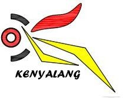

Naiktaraf dan Baikpulih Stadium Sarawak
Overall Current Aerial View
Stadium Sarawak · Drone survey 16 October 2026 · 2 min
Play
Full screen
Jurutera Perunding Kenyalang Sdn. Bhd.
Tip: turn your phone sideways, then tap Full screen.